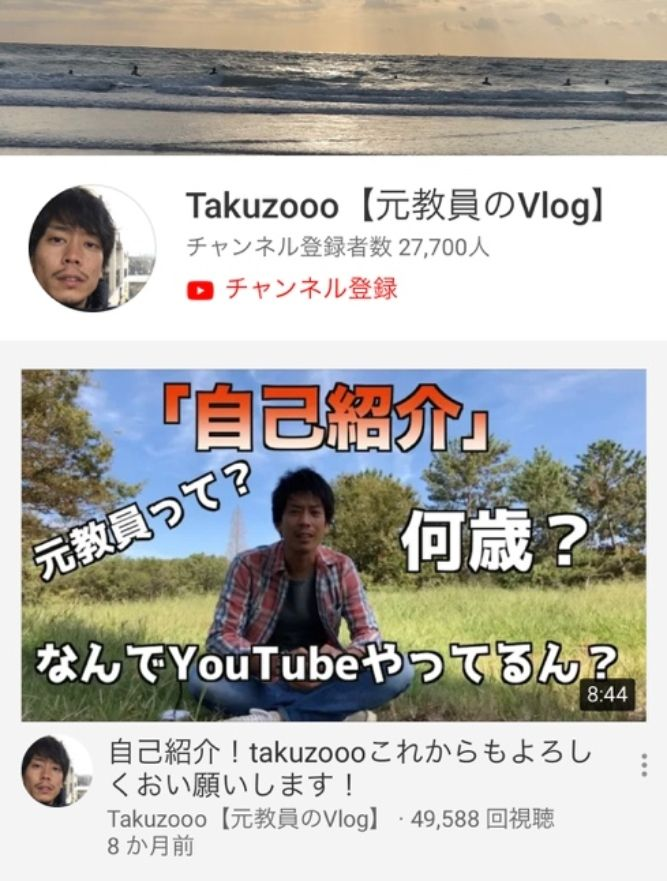

| 記録より記憶に残る人の本 | |
| Takuzooo | |
| (2019) | |
記憶より記録に残る人の本
〜「偏差値 ３４ の高校生」が「教員」「うつ病」を得てから「ＹｏｕＴｕｂｅｒ」になる人生〜
ＹｏｕＴｕｂｅｒ タクゾー
本書は【値段自由】です。もちろん０円でもＯＫです。
皆さんに読んで頂いて値段（価値）を決めていただきたいです。
本の最初と最後のページにＵＲＬを貼っておりますのでリンクから飛んで頂ければ、値段を決めて頂けます。
値段は １００ 円から １００ 万円までご用意しております。（特典があるものもございます）

本作品を示すサムネイルなどのイメージ画像は、再ダウンロード時に予告なく変更される場合があります。
本作品は縦書きでレイアウトされています。
また、ご覧になるリーディングシステムにより、表示の差が認められる事があります。
もくじ
【第１章】 「だって自分で決めたんやろ？」が父の教育
【第２章】 嫌なことから「どうやったら逃げられるか」
【第３章】 まずは「形」から入るのもあり
【第４章】 後輩が付いてこないキャプテンになった
【第５章】 「記録より記憶に残る人」
【第６章】 人生を決定する要因は「環境」
【第７章】 群れるのは「勇気」ではなく「臆病」なだけだった。
【第８章】 「未熟」に気づく事が「未熟脱却への カギ 」
【第９章】 「バカ」には公文式がオススメ
【第 1 0 章】 「緊張」は本気の証
【第 1 1 章】 「ぼく、大学退学」します。長い人生たまには小休憩も。
【第 1 2 章】 フリーターになってわかった社会から見た《人の価値》
【第 1 3 章】 いつまでも「お金」が足りない
【第 1 4 章】 初対面の 29 歳バンドマンから聞いた「夢物語」
【第 1 5 章】 大学６年生・完
【第 1 6 章】 海の家１ヶ月住み込みバイトで嫁との運命の出会い
【第 1 7 章】 人生「詰んだ」と思った瞬間
【第 1 8 章】 夢は叶えると次の夢ができる
【第 1 9 章】 人というのはまさに「十人十色」
【第 2 0 章】 うつ病との出会い
【第２１章】 「見当違いな決断」が「 最適の決断 」の可能性あり説
【第２２章】 １円が生み出せない
【第２３章】 僕の周りにいる変な人
【第２４章】 今後やろうとしている事
はじまり
まずは簡単な自己紹介です。
職業「ＹＯＵＴＵＢＥＲ」。奈良県出身の大阪在住 30 歳男性。現在、結婚生活２年目の妻と同居で子供なしの二人暮らし。
そんな僕は早々にある事に挫折した。それはタイトルの「記録より記憶に残る人の本」にもあったように「記録」を目指す事に挫折している。だから大きな野望や大きな記録などには全く興味がなく、日々の生活は自分が「興味のある事」と「やりたい事」だけの人生を送っている。
よく他人から
「そんな事（好きな事）ばっかりしていないで働け」とか
「良い大人なのだから」とか言われることがあるが、
人は人、自分は自分。あくまでも自分のペースで自分らしくこの本を書き始めて行きたいと思います。
現在の生活をする上での収入のメインは、ＹｏｕＴｕｂｅで得た広告費が生活の主軸になっている。（大した額ではないが・・・笑）
何年も前から映像関係の仕事に就いていたわけではなく、１年ほど前までは教員として子供たちに日々授業をして教員生活を送っていた。
その教員生活を退職した理由は「うつ病」が発症したのがきっかけだった。
うつ病だと告白すると驚かれる事がある。でもそれも含めて自分なので特に隠すことはない。
昔からエリートで歩んできたわけではなく、失敗に失敗を繰り返した人生で大学時代は４年生大学を６年間通った。
高校時代は奈良県内で偏差値がワースト２番目の高校に通っていた。
本書は、そんな僕が今まで経験した「失敗」をテーマとして、時系列に沿って書いた本となっています。失敗という経験を通じて何を思って、何を考え、どんなアプローチをしたのかを簡単にまとめました。
ではそんな失敗だらけの人生のはじまり。
【第１章】 「だって自分で決めたんやろ？」が父の教育
ぼくは父親と母親と弟の４人家庭で生まれ育った。父親が個人経営でケーキ屋を営んでいる人で、いかにも職人気質の頑固な人。母は父が経営するケーキ屋の手伝いをしていた。そんな小さなお店を経営している夫婦だった。
父親は真面目な人でシャイ、どちらかと言えば人前が苦手な人。母親はケーキの販売をしていたためか父より少しは明るい性格だったが、母も父同様に人前が苦手なタイプの人だった。
そしてこの両親（特に父親）の教育理念は「自分で決めなさい」だった。
例えば小学生時代なら、友達同士で「一緒に習い事をしたい」と話になったりする事がよくある。そんな時はどこの家庭も大体、親に反対されて撃沈する友達がほとんどだった。しかしぼくの家庭は違った。親はぼくに
「やりたいならやっていいよ」
といつも言ってくれる。それを友達に言うと「良いな〜」と羨ましがってくれて僕も少し誇らしい気持ちになる時もあった。
しかしこれには父親なりの教育方針があった。自分で決めた限りは責任が伴うことをぼくに教えるのが意図だった。
そんな事を知らないぼくは、喜んで習い事を始める。そして最初は楽しいがすぐに飽きたり伸び悩んだりする。そして嫌になる。
そして母に
僕「辞めたい」
と言っても
母「お父さんに言いなさい」
と言われる。いざ勇気を振り絞って父に言う。
僕「もう辞めたい。」
と言うと、必ず言われる言葉があった。
父「だって自分で決めたんやろ？」
これを言われるとギクッと立ち止まってしまい、反論出来ない小学生の僕がいた・・・
それ以降、習い事に行くのが面倒になったりやる気がなくなったりした時でも父親からの「だって自分で決めたんやろ？」は魔法のように僕の脳裏に駆け巡る。
僕が通っていた習い事は「プール」「体操」「そろばん」「野球」。
これ以外に新しい習い事をやりたいと思っても、親に言う前に必ず自問自答するようになった。「それは本当にやりたいことなのか？」「気分ではないか？」と。
このようにして軽はずみな言動をせずに小学生なりに考えながら自分の決断をしてきた。「自由」には「責任」が伴うと言うことを実体験で学んでいき、「だって自分が選んだやろ？」は行動に責任を持つきっかけとなった。
子供であろうが大人であろうが自分の決めたことを覆すにはそれ相応の責任が伴う。決して覆すことが悪い事ではなくて、覆すとは誰かの期待を裏切る行為であると認識した上で覆す必要がある。だから覆す時には謝罪をしたり変更を素直に認めて誠意を示す必要がある。
【第２章】 嫌なことから「どうやったら逃げられるか」
学生時代の僕は至って普通の子供だった。登下校は班登校のみんなと一緒に登校して、学校では友達と遊んで、授業を受けて帰宅する。そして夕方のチャイムが鳴るまで友達と遊んでその後きっちり宿題をして次の日学校に行くという毎日。
際立って勉強が出来なかったわけでもなく、際立って運動ができるわけでもない。先生の言うことはちゃんと聞くし悪い事をして目立つこともない。ごく普通の小学生だった。
性格は両親の遺伝を受け継いだのか「恥ずかしがり」で「緊張しい」だった。だから授業中に手を挙げて発言したことは一度もない。先生に「お前答えろ」と当てられない限り授業で発言はしない。人前で話をしたりすると緊張で顔が引きつったりして上手く話せない子供だった。
そんな僕には嫌なイベントがあった。それは月に１度回ってくる「１分間スピーチ」だった。
１分間スピーチとは下校前のホームルーム（帰りの会）で発表者がクラスのみんなの前で最近あった出来事を１分間で話をする。発表の頻度は月に１回ほどで順番は出席番号順に回ってくる。それが苦手で、大嫌いだった。
自分の中で「何日後に１分間スピーチが回ってくる・・・」と数えながら学校に行っていたのをよく覚えている。
発表者にも色んなタイプの同級生がいる。
・堂々とスピーチ出来る子
・１分間固まったまま一心不乱に時計の針を見て、直立不動スタイルで時間が過ぎるのを待つ子
普段は明るくて面白い先生もこの時は、それを怒ることもなくただただストップウォッチを見ているだけだった。その無言の空間が自分にとっては地獄の空間に感じて苦痛だった。
結局僕はいつも辛うじて 30 秒ほど話をして、残り 30 秒は考えているフリをして秒針が過ぎるのを待つと言うスタイルでその場を逃げきった。今考えれば逃げ切れたかわからないが。それくらい人前で話をするのが苦手だった。
大人になった今でも人前で１分間スピーチは嫌いだ。もし１分間スピーチがある会社で仕事をしていたら、出勤するのがとても苦痛だと思う。
でも小学生だった当時よりも今の方が経験や知識が豊富なので、何とか１分間くらいなら人前で話をする事は出来ると思う。だけどそのスピーチが「得意」なことか？と言われればそれは違う。今も変わらず「苦手」だ。
大人になれば色んな経験を積んで知識を学ぶことでテクニックや理論を駆使して以前苦手だった事でも多少上手く見せたりこなせたり出来るかもしれない。でも突出した成果や結果は出ない事が多い。やっぱり苦手なことだから・・・
当たり前だけど、「得意」に比べると「苦手」は成果が出にくい。
どうせ同じ時間・同じ労力をかけるなら得意な事をして結果を出した方が時間と成果のコスパが圧倒的に良い。
・自分自身やりがいがある（達成感など）
・他者からも評価されやすい（承認）
と思うのでぼくは「苦手（嫌）なことから逃げ続ける人生」でどこまで逃げられるか現在検証中です。今後もぼくが選択するのは「得意な事」や「好きな事」だけに絞りたいと思っています。
「好き」な事でもし成果が出なかったとしても、試行錯誤することが楽しいはずなので、自分自身が「好き」「得意」で尚且つ《勝負できるフィールド》を常に探しています。
【第３章】 まずは「形」から入るのもあり
小学校３年生になると近所の同じ歳くらいの友達から噂を聞いた。
「野球チームを作るから入らないか？」
と一軒一軒インターホンを鳴らしてくる「おじさん」がいるらしい。いかにも怪しい噂だった。
しかし日を追うごとに仲の良い友達やら近所の友達がドンドン「おじさん」に勧誘されていく。
近所の友達が言う。
「俺のところにもそのおっちゃん来た」
「昨日変なおっちゃんが野球やろうと誘いに家来た」
なぜか僕のところには中々来なくて安心したが、友達がみんな誘われている話を聞けば聞くほど
「俺のところにも来ないかな？」
と思うようになってきた。聞けば野球チームが集まる日は刻一刻と近づいている。
そして僕は心の中で思う・・・
「変なおじさん。俺の家にも来てくれ。」
不思議な願い・・・笑。本来なら一生願う事のないお願いだが、当時の僕には「おじさん」がサンタクロースのように憧れの人になっていた。
そしてその日がとうとう来た。
「ピンポーン」
慌ててドアを開けるとそこには噂の「おじさん」が立っていた。後に僕の少年野球の監督となる人物だった。
やっと自分の家にも変な「おじさん」が来てくれて僕も晴れてチーム結成の日にグラウンドに向かった。
グラウンドには怪しいおじさんと 20 人くらいの小学生がいた。初日から早速練習をしたのを覚えている。まずはキャッチボールの練習を２時間か３時間くらい教えてもらい、その後解散した。
その日のメンバー全員に帽子をプレゼントしてもらった。入団が確定した月の月謝できっちり帽子の金額を請求された。
でも練習に来た子供は嬉しそうにその帽子を被って自宅に帰る。すると兄弟や近所の子供が「その帽子何？」と気になり欲しくなり、その後芋ずる方式で子供の入部を増やしていった。
僕の家も例外ではなかった。初日は僕しか行かなかったが、僕が嬉しそうに帽子を被って帰ってくる姿を見た弟は、帽子欲しさに翌日の練習に参加して無事帽子をゲットした。
たった１つの帽子が僕ら兄弟を野球漬けの日々に変えた。
つまり「たった一つの野球帽」には人の人生を変えてしまうくらいの力がある。
よく世間では形から入った人の事を悪く言ったり批判したりするケースがある。
ぼくの勝手なイメージだが「形から入る人」は
・カッコつけている人
・実力が高くない人
のような印象がある。そして世間も同じようなイメージ。
でも周りの目を気にして、何も始めないのは非常にもったいない。
どんどん時間だけが過ぎていってしまう。
僕は「サーフィン」を趣味でするのだが、完全に形から入ったタイプである。でも形から入らないと全国の海に行きたいと思わないし、海での人との出会いもなかった。だからそういう時はあえて他人から「形から入っている。笑」と笑われてみるのもありかなと思う。
そうじゃなかったら何か始めるキッカケがどんどん失われていく。
実は意外と周りを見渡せば、みんな同じように形から入っていたりしている。
【第４章】 後輩が付いてこないキャプテンになった
小学校高学年は野球に明け暮れた。来る日も来る日もバットとグローブを持ってグラウンドに行った。そして僕らが最高学年になった時には、ありがたい事にキャプテンに任命してもらった。
キャプテンになるまでの下級生時代のぼくは、自分が好きなように野球をやっていれば良いし、もっと言うなら自分がヒットを打つなどして個人記録が出ればそれで良かった。チームの勝ち負けは正直どっちでも良い。自分のためにしか野球はやっていなかった。
そんな少年がいきなりキャプテンになって、みんなをまとめられるはずがない。
まず僕が戸惑ったのがウォーミングアップのランニングだった。
例えばランニングのスピードが早いと言って付いて来られない下級生がいれば、逆にランニングのスピードを落とすと手持ち無沙汰になり遊び始める後輩がいる。
それまで僕は他人のことなんて考えて生きてきたことがなかった。だからどうしたら良いかわからなかった。試合に勝つ以前にウォーミングアップができないチームになっていた。歴代の１期生や２期生の先輩キャプテンはしっかりみんなをまとめてくれていた。しかしぼくがキャプテンになった途端にチームはバラバラになる。
どうしたら良いか悩んだ結果、初めに考えたのは１期生と２期生のキャプテンの真似をする事にした。
「ここで厳しく後輩を注意していたな」とか
「面白おかしく笑かしていたな」とか
色々思い返しながら取り組むようにした。
そうすると日々変化が出てきた。毎日「今日は出来た。」「今日は出来なかった」と試行錯誤しながらグラウンドに向かった。しかしこれでも先輩キャプテンのように上手くはまとめられなかった。
そんな時にふと思ったことがあった。
「いろいろ試しても上手く引っ張れないなら、自分らしくありのままを出そう。そっちの方が後悔もない。」
次の日から困った時は素直に困ったと言うし、嫌なら嫌と素直に言うようになった。そしたら誰かが少しずつ助けてくれるようになった。
今まで「キャプテン」＝威張って下級生を引っ張ることだと思っていた。しかし下級生から見ると、威厳のあるキャプテンを「誰も僕に求めてない」ということに気がついた。
自分を偽っていたり、誰かのマネや何か演じているのは胡散臭い。それよりも裏表のないありのままの方が人間味があると思う。
だからあえて強さも弱さも出す事で、人として信頼される人になろうと思った。
嘘の笑みや嘘の表情はどんどん信頼性をなくしてしまう。
ぼくはキャプテンだからといって威張る事なく自然体を選んだ事で、チームのみんながぼくを支えてくれた。
「たっくんが言うなら・・・」
「たっくんに着いていくで。」
ぼくは偉そうにしたわけでも腕力で脅かしていたわけでもなく、自分らしくいただけ。やっぱりチームメイトは「威張っているぼく」ではなく「ありのままのぼく」をキャプテンに選んでくれていた。
下級生時代には考えもしなかった「チーム」の事を考えて、それをありのまま後輩に伝えた。チームが良くなってほしい。チームが勝ってほしい。みんなが感じ取ってくれてぼくはみんなのおかげでキャプテンになれた。
人によってキャプテンや上司になった時の立ち振る舞い方は異なる。でも全員が全員
・キャプテンだから先輩だから、完璧じゃないといけない
・キャプテンだから先輩だから、後輩の手本にならないといけない
わけではない。
実際、僕にはそれが出来なかった。
だから自分の気持ちに嘘はつかずに、正直にチームの事を考えて野球に取り組んだ。
嘘のつかない信頼できる人になるために。
【第５章】「記録より記憶に残る人」
僕はいよいよ中学に進学して野球の進路に、中学校の野球部ではなくクラブチームの硬式野球を選択した。
親に「どうしても硬式野球をしたい」と説得して他府県の硬式野球チームに入部させてもらった。強いチームではなかったが僕たちの学年は３０人くらいいた。
部員の多いチームでは常にチームメイトの中でのアピール合戦に勝たないといけない。練習場に行くと監督・コーチに必死にアピールをする。グラウンドでは一切気が抜けない状況。
「ぼくはこれくらい上手に守れます」
「ぼくはこれだけ打てます。」
他の部員よりも少しでも指導者に認めてもらい試合に出たい。それは全員が思っている。ぼくも負けないようにどんな練習でも必死に取り組んだ。
練習は週５日、休みは平日に２日あった。大阪のクラブチームに所属していたので、普段通っている地元の奈良の中学校の授業が終わるとダッシュで家に帰る。そして練習場所がある大阪のグラウンドまで片道１時間かけて通う。
ようやくの思いでグラウンドに到着すると僕ら１年生を待ち受けているのはグラウンドの外のアスファルトで走り込み。その時に上級生がグラウンドを使っている。
それでも当時のぼくは『野球が人生の全て』と思っていたので何事にも一心不乱に全力で取り組んだ。今持てる時間や力を全て野球に注ぎ込んだ。
しかし無念にもぼくの野球の才能の無さに気づく出来事が中学２年生にあった。
将来野球をやっても上の世界（高校・社会人）では勝てないと思ったのは、当時忠岡ボーイズというチームにいた前田健太投手（現：ドジャース）を初めて見たときだった。前田投手は僕の１歳上で、パッと見ただけでとんでもない才能の選手だと分かった。「オーラ」「投球フォーム」「球質」どれをとっても敵わないぼくは今後どれだけ練習してもあのレベルにはなれないと感じた。
もし今後も野球を続けて高校や大学と「自分のレベル」に合ったチームに行けば試合には出場出来るだろうが、トップレベルでは間違いなく歯がたたない。そう思うようになってから徐々に野球に対する熱は冷めていった。それと同時にチームでもレギュラー争いの雲行きが一気に怪しくなってきたタイミングで野球をきっぱり辞めた。
「勝てない試合にはいかない。それなら勝てる場所を探す！」
以前から信頼していたコーチに教えてもらった言葉を教訓にして生きるようになった。それは
「記録より記憶に残りなさい」
ぼくは記録を目指して記録を出せるほど有能な人ではない。
だから記録は早々に諦めてしまって記憶で勝負する事にした。
今の仕事のＹＯＵＴＵＢＥでも毎日数字が出てくる世界（チャンネル登録者数・再生回数など）だが、数字にはあまり執着していない。
それよりも将来何十年か経った後に「タクゾーって奴おったな」と覚えてくれている方が嬉しいなと思う。
【第６章】人生を決定する要因は「環境」
高校受験の時がきて、それまで全く勉強をせずに野球ばかりしていた。気がつけば学校の５教科の合計が 500 点満点中の 100 点を切るようになっていた。要するに１教科あたり 20 点以下という計算になる。
その成績なら受験で合格できる学校が県内でも片手で数えられるほどになっていた。受験の結果は、偏差値 3 4 の学校にしか入学できなかった。
高校の入学式の日が来た。体育館には金髪の入学生、ピアスやらワンポイントタトゥーの入学生がゴロゴロいる。 ぼくは今まで野球一筋でそんな状況を見たことなかったので「スゲェーな。田舎のヤンキーがいっぱい」と思った。
ぼくとヤンキーの同級生とでは今まで育ってきた環境が全く違うのでぼくは全てが新鮮だった。ぼくは特に悪いことをするような生徒でもなかったが、同じ学校（環境）にいると自分の感覚や考え方も少しずつ変わってくる。
日常的に何らかの問題行動が学校内で行われていて退学や謹慎になる同級生を見ていると少しずつ自分の感覚が狂い始めていった。
今まで悪さなど一度もした事がなかったぼくだったが、高校２年の秋頃にぼくは不祥事を起こした。そして母親が学校に呼ばれた。
母と僕と学年主任の三人で話をした。
「退学するか？それともまだ学校に通いたいか？」と二択を迫られた。
結局学校を続けることを選んだので、数日間の自宅謹慎と二週間の特別指導を受けた。その期間は他の生徒に会わないようにと言われて隔離教室に入ることになり個別指導を受けた。みんなと一緒に授業を受けられない日が約三週間あった。
ぼくの中学時代や野球時代を知っている人なら、まさかぼくがそんな事をするなんて夢にも思ってなかったと思う。僕も夢にも思ってなかった。
入学当初は周りと自分の違いに驚くことが毎日だったが、その環境に日々いることで知らないうちに自分も少しずつ変化してきた。そして時が経てば経つだけ大きく変化する。その「変化」は実は本人が一番気づかない。
しかしまた環境を大きく変えれば自分も大きく変化する。だから僕は極力自分を魅力的な環境に身を置くようにしている。自分自身は大した人間でないからこそ環境を常に見返す。
現在は環境が素敵なので良いアイデアや考えが身につく。例えば「社会貢献をしたい」や「人の気持ちを大事にする」や「面白いことしたい」はぼくが思うことではなくて、そう思う人が周りにいる。だからそんな環境にいると自然と自分も同じような事を大事にしようと思うようになる。
たかが「環境」ですが「環境」を侮ってはいけなかったと言う事です。
【第７章】群れるのは「勇気」ではない。「臆病」なだけ。
高校２年生のある日いつものように学校の休み時間を友達と雑談しながら過ごしていたらこんな話をされた。
Ａ「そういや、今週の金曜にバイクで集会あるらしいで。行く？」
僕「メンバーは？」
Ａ「〇〇（自分が在籍している学校）高校の同級生。学校辞めたやつも来るらしい」
僕「〇〇高校に関係するメンバーだけなんや？」
Ａ「そうやで」
そして当日の金曜日の夜を迎えた。
集合場所に行くとすでにバイクの集団が集まっている。メンバーには学校を辞めた人から同じクラスの人や仲の良い人など総勢で 40 〜 50 人くらいの人数がいた。僕は普段こんな大勢の集まりに行くことがなかったので少しワクワクしていた。
特に何をするわけでもなかったが集まって気がつくと、あっという間に夜が明けて朝を迎えたので解散した。
当時のぼくは普段から１人で行動する事はほとんどなかった。大体いつも数人で行動を共にしていた。
１人で何かする勇気はないが、 40 人や 50 人の中に自分がいる事で勝手に強くなれた気がした。実際１人で何かするよりも誰かと群れるほうが「自分は人と一緒」と思えて安心する。「人と違う」は恐怖だった。
しかしこんな日々を過ごしていて思ったのは、だんだんと群れていることが楽しくなくなってきた。これ以上の楽しさはここにはない。
そしてタイミングよく僕は受験勉強をすることになり、きっぱり群れることを辞めた。
以前までは１人になることが恐怖で、群れないと１人ぼっちになってしまうと思っていた。でも勇気を持って離れてみると、１人ぼっちではなくて次の場所でまた挑戦しいてる（受験）仲間がいた。
受験勉強で心が折れそうな時には、その仲間と話すことでまた奮い立つ。
弱さを隠すために群れていても人生は変わらなかったけど、弱さを見つめて独りで立ち始める（独立）と人生が動き出した。
【第８章】「未熟」に気づく事が「未熟脱却への カギ 」
高校２年生の冬。
ベッドに横たわり天井を見ていた。ふと自分の人生は今後どうなるのか漠然と考えてみた。
「自分の学校の卒業生って就職してお金持ちの人いるかな？...」
「しんどい仕事はしたくないな。」
「お金には困らない人生が良いな。」
しばらく考えて
「このままやったら絶対無理や」と直感的に思った。
高校生の今でも世間からの評価が低い。電車に乗っていると進学校の人は僕らと同じ車両を嫌がる。制服を見ればどこの高校なのか一目でわかるからだった。
社会はバカには冷たい。
ぼくは卒業後の進路で就職を考えていた。「良いところ」に就職するにはどんな人ならできるだろうと考えてみた。
会社の社長（人事）は新入社員に以下のような人を採用するだろう。
・人を統率する力のある人
・勉学が優れている人
・抜群の運動能力を持っている人。アスリートなど
・頭の回転が早い人
自分は何も当てはまらない事に気付いた。初めて人生で危機感を覚えた。自分なりに考えてみた。
Ｑ,まず自分は何をしなければならないのか？
答えは・・・わからない！
Ｑ,どんな人生にしたいのか？
答えは・・・お金には困りたくない
Ｑ,給料の高いサラリーマンになるには学歴は必要か？
答えは・・・必要。しかも四年制大学。
と言うように将来の目標から逆算して、今何をすれば良いか一つずつクリアにしていった。
そしてその日から受験勉強が始まった。開始日は「本日」。そもそも人よりも勉強で遅れをとっている自分が明日に延ばす必要がなかった。悠長に「明日からやろう」なんて言っている場合ではなかった。
そして両親に「勉強したいから塾か何か勉強するところ入れて。」と言って公文式へ通うことが決まった。
自分が思っているより自分の能力が低い事に気付いた。
薄々は気づいていたが、そんな状況からずっと目を背けてきた。それは何故かと言うと、そんな事考えないで用もないのに携帯電話を触っていたり、誰かとくだらない話している方が楽だったから。だから僕の人生はずっと「楽」を選択したのでこの有様になっている。
「苦手なことから逃げる」ことと「楽を選ぶ」事は全く違う。「楽」は得意な事、やりたい事があっても面倒とかしんどいなどと言って断念する。自分のやりたい事に対して努力しないのはダサい。初めて気づいた。
「俺ダサい人やん。」
自分が未熟だと認識すると自己肯定感が低くなる。そしてプライドが傷つく。でも成長したいのなら必ずここで向き合わないといけない。
自分を知ることで「課題」が見えてきて成長につながる。自分を知らない僕は「課題」が見つからなかった。だから成長もなかった。
【第９章】「バカ」には公文式がオススメ
公文式に通うことになり、まずは最初に実力テストを行った。
両親が公文式の先生に「うちの息子、勉強が苦手で全然今まで勉強してなかったです」と伝えていた事もあり小学生レベルの試験問題を作ってくれていた。
そして当日、公文式の教室に入り試験が始まった。問題を解こうとすると最初は小学１年生レベルなので楽々と解ける。そしてどんどん問題が難しくなってきて小学生中学年レベルで計算問題も難しくなり途中からピタリとペンが止まる。
勉強の苦手な人の思考回路はまさにこれだ
「わからない＝うざい・イライラする」
このいつものルーティンに入る。気がつけば試験時間が終了していた。
採点結果は・・・
《小学校３年生レベル》と診断。
結果を見ると何故か少し笑えてきた。高校２年生なのに小学生３年生レベル・・・自分の事ではないような気分。
ここで逃げても何も現実は変わらない。
ここで立ち向かおう！そう決めた。来る日も来る日も小学生レベルの問題に向かい合った。
公文式の良いところは一度間違った問題を放ったらかしにしない。正解が出るまで解き続ける。たまにやり直しをし過ぎで、プリントが消しゴムで何度も消されて薄くなり破れる事がある。それくらい正解までとことん向き合う。
僕は来る日も来る日も、高校の授業が終わると小学生が待つ公文式へ向かって毎日勉強した。
これを当時の友達に
「今公文式で勉強始めたで」
と言っても誰も褒めてもくれなかった。むしろおかしくなったと思われて心配されたくらいだった。
それでも毎日、数十枚のプリントをこなし翌日の公文式に備えて宿題を何枚もこなす。その成果あって無事三ヶ月で小学生・中学生レベルのプリントを全て網羅して公文式を卒業して大学受験の塾に行く事ができた。
もし公文式じゃなかったら受験勉強をやり遂げることができなかったと思う。独学で勉強していたら、たった１問解らない問題がきても飛ばして次の問題に行くことはできる。
しかし公文式ではそれが許されない。必ず正解まで何度でも挑戦する。この時はそれが苦痛で仕方なかった。高校レベルに追いつくまでまだまだ問題量がある・・・
でもこれが結果として成功だった。
受験勉強をしている限り、またどこかで同じような問題を解かないといけない日がくる。そしていつかこの問題にもう一度遭遇して、もしまた不正解になると「弊害」は次に「トラウマ」へと進化して僕の進路を邪魔する。
だからここで必ず向き合う必要があった。また同じような問題に直面するから。
一つ一つの問題と向き合うと「わかる部分が増える」。
更にそれと同時に「わからない部分が減った」。
【第 1 0 章】「緊張」は本気の証
いよいよ大学受験の試験当日。
頻繁に遅刻する僕でも、この日ばかりは試験会場に遅れずに会場入り。そして刻一刻と試験の時間が近づいてくる。
「この１年間全てを受験に捧げてかけてきた。この日のために。」
と思いながら、じっと開始時間を席で待つ。
日本では人生の節目節目で訪れる一大イベントとして試験や面接などがある。僕も例外なくこの日を迎えたわけだが、試験で初めて緊張を感じた。思い返せば、今までまともな受験勉強をした事がなかったので受験での緊張感を味わった事がなかった。
そしていよいよ本番が来た時に初めて
「これが、みんなが言っていた試験のドキドキか」
と感じる事ができた。
ぼくはこの緊張を初めて感じて少し嬉しい気分になった。
何故なら緊張している人はだいたい「本気」の人だから。本気じゃない人には緊張は来ない。だからぼくは過去の受験では本気じゃないので緊張しなかった。
つまり「緊張」は本気で挑戦しているかっこいい人だった。
だから自然と緊張でちぢこまる事はなかった。「俺はこんなに緊張するくらい頑張った」と達成感を持って試験に挑むことが出来た。
結果、そんな感じで挑んだ青春の１年間のビックイベントの大学受験は見事「不合格」に終わった。結果的には第二志望の大学に進学。
【第 1 1 章】「ぼく、大学退学」します。長い人生たまには小休憩も。
大学に入学し新生活がスタートした。すぐに友達も出来て彼女も出来て、充実したキャンパスライフを送っていた。そんな生活がしばらく続いた。
そして時が流れ、大学３年の春の出来事。それまでしっかり単位も取得してアルバイトで学費をコツコツ稼いでいた。学費の半分は奨学金、半分はアルバイトで稼いだお金で納付。
ある日、それまで頑張ってきた気持ちが突然プツンと糸が切れたようにやる気を失った。当時は何が起きたのか自分でもわからなかったが、今考えればこれは「うつ病」に似たような症状だった。
大学では教員になるために毎日、外が暗くなるまで授業を受けた。放課後は学費を稼ぐためにアルバイトを 23 時ごろまで働いた。そして翌日もまた同じルーティンで学校に向かう日々を続けた。気がつけば少しずつ自分の中で疲れがたまってきたのかもしれない。
症状としては、別に落ち込んでいるわけではないが全くやる気が出ない。実家の自分の部屋から出られなくなった。本当にぼーっとしている放心状態が続いた。そして自宅で引きこもること一ヶ月。気がつけば少しずつ元気になっていた。時期はちょうど就職活動が始まるくらいの大学３年の秋頃だった。
この１ヶ月間の休息で久々に自分の将来について考えた。
「このまま教師になるのが正しいのか？」
「自分が先生になっても子供達に人生について教える事ができるのか？」
でも残念ながら１ヶ月では納得する答えは出なかった。
幸か不幸かはわからないが当時の経済は最悪の状況だった。アメリカのリーマンショックの影響で日本の就職状況は氷河期を迎えていた。
ここで慌てて就職活動するのではなく「一旦世の中から離れてみよう」と思い１年間限定の休学を決意する。結局休学には休学期間中も授業料が必要になる事がわかり、退学なら授業料も必要ないし２年以内なら学長の許可さえあれば単位も全て復活すると聞いたので退学することを決定した。
そして半年間休学と半年間退学を行い、丸一年後に復学して晴れて大学生に戻れた。
休学をせずに大学にそのまま在籍して卒業を迎えたら、気付けなかった事が多々あった。
・後に出てくる 29 歳の男性との素敵な出会い
・留年して年下と同級生になる事への小さなプライドも捨てられなかった
僕は一度休んでみると、ずっと同じ環境でいることの怖さを知った。同じ環境にずっといると少しずつ感覚が「鈍感」になってく。
環境は最初馴染むのに大変だったり、生活リズムが掴めなかったりするが、それが習慣化されると最初ほどの環境への適応の大変さはなくなる。
そして気がつけば「ぼくは毎日頑張っているんだ」と思い込んでいるだけで、日々をこなすのに精一杯だった。どんな良い環境も悪い環境も、その環境が長く続くことで知らず知らずのうちに自分の判断を鈍らせて鈍感になっていった。
自分では冷静な判断や冷静な分析をしているつもりだったが、将来のことすら考えることもなく、日々を過ごすのに必死だった。
大学を一旦休んでみることで（環境を一旦離れることで）、体の休息だけではなく「冷静な目」から遠のいていたと気づくことが出来た。
【第１２章】フリーターになってわかった社会から見た《人の価値》
今まで学生という身分でいたが休学で学生という身分からフリーターになると世間の反応は如実に変わる。
バイト先などで新しく知り合った人と話をしていると
Ａ「学生さん？」
僕「学生です」
Ａ「何勉強しているの？」「就職どこに行くの？」「どんな仕事就きたいの？」
とか色々将来について希望のある話や質問をされる。
しかしフリーターの場合は
僕「フリーターです」と言うと
「あ！」と表情が変わる。そしていきなり将来を心配される事がある。
Ａ「若いから早くちゃんと定職を見つけや」
これは僕の考え方や僕の人間性を見て話をしているのではない。今の僕の状況や肩書きを見て話をされる。よく社会である光景だが、目の前の人が高学歴の人とわかると態度が変わったり掌を返してペコペコしたりするあの現象。
でも本質を考えれば状況や肩書きは刻一刻と変わっていくものである。パートのおばさまが一年後にはフリーランスで年収１０００万になっている可能性が十分にある。でも社会はそんなことは関係なく、その人の今の状況や肩書きを見てその人を判断する。
冷静にその人の考え方や人間性を知れば、その人自身が偉大かどうか判断出来るのに社会は「状況や肩書き＝その人の価値」と捉えられている。
非常に残念な結果だが、フリーターになることで状況や肩書きを見て人を判断する事が社会だと教えてくれた。だったら自分は人をみるときに「本質を見よう」と意識するようになる。その人の話している内容や考え方など。
ぼくは人の役職には興味がない。それは変動するからである。
「状況や肩書きを見る力」はどんな人でもすぐに手に入るモノサシ。でも「本質を見る力」は普段から意識しないと手に入らないモノサシ。
「本質を見抜く力」モノサシの対象は「人」だけではない。仕事を探す時やビジネスをする時にも使えるのである。例えば、仕事探しにおいてお金は大事であるが、目先のお金で判断するのが誰でも手に入るモノサシ。でも本質を見るモノサシを持つ人は数万円高い会社に就職をするのではなくて、就職した会社で「自分にはどんなスキルが身につく」のか「自分にどんなメリットがあるのか」を考える。
簡単に手に入るモノサシはいつまで経っても正しい選択に自分を導いてくれない。判断基準は内的要因ではなく外的要因ということである。
給料が高い会社に就職することが悪いのではなくて、スキルが身につかない会社や自分にとってメリットの少ない会社にいることが問題であるという本質的な部分の話。
でも実際今の社会では肩書きを持つことは大いに武器になるし良いことでもある。しかしこの肩書きはあくまで自分の外側の価値であって、退社や転職すると外側の価値は変動する。本当の自分自身の価値を高めるには、まず自分が本質的な部分を見る「モノサシ」を持つことが必要だった。それこそが、僕が生きる社会だった。
【第 1 3 章】いつまでも「お金」が足りない
フリーターになって学費を納める必要がなくなり、自由に使えるお金が増えた。学生時代は自由に使えるお金は学費など生活費を除いて１ヶ月に１万円くらいの貧乏学生だった。
自由に使えるお金がいきなり 10 万円くらいになり調子に乗ってタバコをカートンで買ったりパチンコに行ったりした。そうなると気がついたら自由に使える 10 万円のお金が月末には無くなっていた。それが毎月だった。
働いている割にはお金がたまらない理由は２つある。
・何にいくら使ったのかわからない。
・生活水準と稼ぎのバランスが「イコール」になっていない。
単純に生活水準を収入に見合うように下げて、何にいくら使ったか把握していればこんな事にはならなかった。
グダグダ言っていても始まらないので、まずはどうしてこの状況を打破していくのかを考えた。
僕が出した答えは生活水準を下げる事だった。具体的には自由に使えるお金を減らす。自由なお金の中で最もシェアが大きい部分は「パチンコ」だった。まずはパチンコをやめる事が現状を抜け出す一番の選択だった。とは言ったものの最初は中々辞める決断が出来ずにいたが「これは何も生み出さない」と気づき辞める事ができた。
ひとまず、生活水準を下げる事で月末のピンチは抜ける事ができた。でも「お金が足らない」問題を解決する根本的な方法とは言えない。
根本的にお金が足らない状況を打破するには支出だけではなく、収入も増やす必要がある。
収入を増やす事を考えないとこの先ずっと、「お金に困る人生」からは抜けられない。困るたびに生活水準を落とし続けるのは得策とは言えない。
最善の方法は「労働でお金を生み出すのではなく、仕組みを作ってお金を生み出す」である。これが最も効率的なお金の生み出し方。これなら他の事や新しい事を始めていてもお金が勝手に生み出される。これの最たるビジネスが投資や不動産であるがこれらは全て数億単位での軍資金が必要となる。
そんなお金はぼくにはないので、まずは軍資金０円のビジネスを育てて仕組みを作るためのまとまった軍資金を得る必要がある。もちろんこの当時のぼくにこの考えはわからず、お金の生み出し方は「空欄」にして現在まで来てしまった。
当時の僕は、何も考えずに手っ取り早く現金をもらうために肉体労働をして現金を稼いだ。決して悪い選択ではないと思う。しかしその後、個人で事業（ＹｏｕＴｕｂｅ・本出版など）をやり出して根本的にお金を生み出す事を考える人生なら、この時から考える力を育てていれば良かったと思う。
【第１４章】 初対面の 29 歳バンドマンから聞いた「夢物語」
フリーター人生を満喫している ２１ 歳の春、当時アルバイトしていた店長によく面倒を見てもらっていた。その店長は関東出身で「今度東京に帰郷するから一緒に行こう」と誘われて同行する事になった。
当時店長は 40 歳くらいで僕とは 2 ０ 歳ほど年の差があった。その店長は口下手で不器用だったが、どこか暖かさがある人だった。店長は黙ってぼくの新幹線のチケットやホテルも抑えてくれていて、ぼくはほとんどお金はかからずに東京に行く事ができた。
東京旅行では特に実家に行くわけではなくて、ただ飲み回るだけの旅行だった。まず東京に着くなりすぐに店長の知り合いが勤めているスナックへ行く。それが若い僕にはたまらなく苦痛の時間だった。でもお金を出してもらっている以上断れない。１日目は渋々同行した。２日目はさすがに嫌だと思い店長に別行動を申し出た。すると快く了承してくれた。
そして１人で渋谷のクラブに向かった。途中で自分の気持ちが変わって引き返せないように終電で向かった。いざ終電に乗り山ノ手線の渋谷駅を目指して環状線を回っていると、恵比寿駅でいかにもクラブに行きそうな男性２人（ 29 歳）が電車に乗ってきた。
「この人ら、絶対クラブに行くな」と思ってその場で声をかけようと決意した。
そもそもクラブの場所もわからず、電車に乗ったので誰かに案内してもらわないとクラブへたどり着けない。人生初、男性を電車内ナンパ。
僕「あの〜すみません」
男「はい？」
と優しそうな声だったので（よしこれはいける）と思って
僕「僕奈良から来たのですがクラブ場所わからないので連れてって下さい」
男「俺も田舎育ちだから気持ちわかるし良いよ」
と連れて行ってもらえる事になった。
結局、翌朝までの丸一晩中行動を共にさせてもらった。その人が言っていたのが
男「タクゾーから見て俺は 29 歳で定職に就かずに何してるの？と思うやろ？」
僕「はい。笑」
男「確かに俺も九州の田舎やから地元に帰ったら早く定職就けって言われるで。でもこっち（東京）は夢追っている奴が多くてその中にいてればまだまだ俺も夢追えるなと思う。 29 歳なんかまだまだ若いからな」
と言われた言葉が今でも鮮明に記憶に残っていて、それまで自分の中にあった古い大人像が崩れた瞬間でもあった。大人っぽくしないといけないとか。社会人やからちゃんとしないといけないとかずっと思っていた。
「本人が楽しいと思う事」や「やり甲斐があると思った事」をやっているのが一番かっこいいなと思った。
その後その人たちとは疎遠になって一度も連絡を取る事もなかったが、身近にいる毎日会う上司の言葉よりたった一度しか会わなかった２９歳のバンドマンの言葉の方が覚えている。
29 歳のバンドマンさん・・・
とうとうあの時 21 歳だった僕は今年 30 歳になりました。
そして今、夢に向かって生きています。
【第１５章】 大学６年生・完
僕は３年生の９月から１年間大学を休んで、無事復学する事が出来た。
もちろん留年している状態なので１学年下の人と同級生になった。同級生だった同じ年の人は僕が復学したと同時に卒業を迎えて、僕は１年後に下級生の人と無事単位を取得して卒業した。
卒業後はもう１年間大学に通った。理由は教員免許（中学）を取得するためだった。元々高校の教員免許は取得する予定で１年生から単位を取っていたが、復学後に中学の免許に切り替えると取得単位数が多かったので卒業までに全単位取得することが出来なかった。
なので先に卒業をして科目等履修生という形でもう１年間大学に通った。
次は２学年下の人と授業を受ける。ここまで来たら１学年下であろうが２学年下であろうが特に何とも思わない。最初は恥ずかしいとか情けないとか変なプライドがあった。実際周りの友達で留年した友達は、そのプライドが捨てきれずに結局大学に通う事を辞めて退学の道を選んだ人もいた。
でもその時に譲れないプライドは８年経った今考えればただの「見栄」だったなと思う。将来になってみたら小さな出来事。その時は譲れないと思っている事は将来の自分からしたら本当にどうでも良い事。
それ以降、プライドが許せないと思う事があっても、「それって将来もそんな事こだわっているかな？」と思うようにしている。実際その見栄を捨てられたおかげで「大卒」と「教員免許」を取得出来た。しかし６年間も年月をかけてしまったが・・・
【第 1 6 章】海の家１ヶ月住み込みバイトで嫁との運命の出会い
大学６年目の 24 歳の夏。
周りを見ると後輩の友人が就職して「初給料」や「初ボーナス」をもらった話を聞くと
「俺このままの道で人生合っているのかな？」
と少し不安になってきた。
そんな僕は現実逃避をするように
「そうだ。自分探しの旅をしよう」と思い
自分が好きな事を考えた。
・海
・女子
・自由
残念ながら僕の脳にはこれしか浮かばなかった。数年経った今でもそんなに大きく進化していない。候補の中では海外という選択肢はなかった。理由は単純にお金がなかったからである。選択肢は自ずとお金のないぼくが行けるところとなる。旅をしながらお金を稼げるところ。結果、住み込みバイトしかなかった。
そして時期は７月下旬になっていたので明日から行こうと思い全国の海の家（神奈川・静岡）に片っ端から電話した。数件目に電話した伊豆白浜の海の家の管理人は『おばあちゃん』だった。
直感で「よし！ここに行こう」と思った。
「明日から働けます」と言ってその日の晩に荷物をまとめた。そして翌朝には新幹線に乗って静岡に旅立った。
初めての静岡の地で接する人は初対面だらけ。僕自身、初対面の人に対しては何の抵抗もないので何ら問題なくすぐに仲良くなれた。海の家では毎日お客さんとの出会いからスタッフの出会いがあった。
そんな時いきなり僕の人生を変える出会いはやってきた。
勤務も慣れてきた２週間後くらいの８月の上旬。いつも通り昼の営業が終わって、夜の営業でＢＡＲのような雰囲気のお店になった頃。そこに女子２人が入店してきた。その子たちはぼくがいるカウンターの前に座った。若い感じの２人組みの観光客。この海のバイトではこんな出会いが毎日ある。
僕もこの時はたくさんあるうちの一つの出会いにしか過ぎないと思って一緒に酒を飲んだり喋ったりして楽しい時間を過ごした。
そして翌日、夜になるとまた彼女たちが来た。
「今から帰るね」と言ってご丁寧に挨拶をした。帰る間際に記念写真を撮ってＬＩＮＥのＩＤを交換して別れた。
その時、妻から見たぼくの印象は、僕がたまたまボーダーＴシャツを着ていたので
「チャラそうなボーダーのお兄さん」と思っていたらしくて特に恋愛対象ではなかった。
僕から見た彼女の印象は
「妹みたいな可愛らしい感じの子」と思っていて、お互い男女を意識した関係ではなかった。
お互い見た目が好きではなくてビビっと来る結婚ではなかったが、結婚してから何度も結婚して良かったと思えた。だから僕は彼女と結婚して良かったと常々思う。
【第１７章】 人生「詰んだ」と思った瞬間
大学を６年間通った後に、無事教員免許を取得する事が出来た。
後は教育委員会に講師の申請をすれば、すぐに学校の先生になれると思っていた。しかしそんなに甘くはなかった。同じ時期に免許を取得した人を見ても先生になれずに諦めて民間の企業に勤め出した人も多かった。
「え！？今まで就活して来なくて就職先ないのにどうしよ？」と思っていた矢先にとある教育委員会から電話が来た。
「もしもし。一度来てもらってお話を伺いたいのですが・・」
「はい。すぐ行きます」
翌日に教育委員会に出向き面接をしてもらった。
「後日連絡があれば正式に勤務してもらうので、電話があればよろしくお願いします」と言われその場を後にした。
結果・・・
連絡はなかった。
そう。来る日も来る日も携帯電話を確認して４月が近づいて来るたびに精神的に参ってきた。そして４月になりいよいよ新学年も始まっても連絡はなかった。
「あ〜あ。俺の人生終わった。大学６年通って現在 2 ５ 歳。就活もしてない。仕事先ない。そしてこれからの毎月の支払いどうしよう？半年後には奨学金の返済も始まる。」
この時、初めて「人生詰んだ」と思った。
とりあえずその日は悲壮感しかなく、目の前が真っ暗になった。そしてひたすら寝た。
そんな事を数日繰り返していて、気がつけば日々カレンダーは進んでいく。
就活をしてない過去や教員になれなかった過去について色々考えていたが、今はそれよりも自分に何が出来るのか考えようと思い、
「よし！肉体労働で汗水垂らして金を稼ごう！」
これが当時 ２５ 歳の僕が必死に振り絞って考えた結果だった。
それからの日々は毎日ヘルメットを持ち、ニッカポッカを履いて現場に向かった。
意外と肉体労働での人間関係が良好で仕事自体も楽しかった。自分達が作ったものが形になっていくのが見ていて嬉しかった。よくテレビでおじさんが「あのビルわしが作った」と誇らしげに言っている気持ちが少しわかる。確かにそんな気分になるなと思った。
そして日々１万円ほどの日給をもらって日々仕事に向かった。
この時に学んだ事は『人生詰んだ』と思っても日本やったら何とかなると。
他にも、この時は知らなかった制度などを活用すれば何ら問題なく生活出来るのが現在の日本だった。
何か踏み出す勇気が持てない時はだいたい「失敗したらどうしよう？」と思うが、失敗しても意外と何とかなるということがわかった。
【第 1 8 章】 夢は叶えると次の夢ができる
肉体労働で生活費を稼いで数ヶ月が経ったある日。昼の休憩中に僕の携帯に１本の連絡が入った。
これは後輩の父親からの電話だった。この後輩の父親は学校の教頭先生で教員の人事の連絡をしてくれた。
何故そんな連絡が急に入ったかというと、実は数日前にぼくは後輩と電車でたまたま会った。
その時に僕がニッカポッカを履いてヘルメットを持っている姿を見て
後輩「たっくん、先生ならんの？」と聞いてきてので
僕「なりたいけど先生なられなかった。ちょっとお前の親父（教頭先生）に言っといて」
と言ってその場は冗談っぽく別れた。
その時の話を後輩が父親に言ってくれたようで、たまたま退職された先生の代わりを探しているという内容だった。
僕は「すぐ行きます」と返答して先生になることができた。
そしていざ出勤の日が来た。学校に行くと子供達は障害のある生徒だった。車椅子に乗っている生徒や体が不自由な生徒などがいて、ぼくはどうしたら良いのか全く分からず完全にお邪魔虫状態だった。
あれだけ「夢」でなりたかった先生になったのに、実際に先生として学校で勤務したら分からないことだらけだった。
色んな先生を見本にして良いところを吸収していった。その中でも１人のベテランの先生が僕の教科書のような人だった。その方は、子供達を笑顔にして職員ともうまく連携を取れている先生だった。目の前の子供たちに対して一生懸命な姿がとてもキラキラと輝いているように僕には見えた。そして僕もこんなキラキラ輝く先生になろうと新しい夢が出来た。
人によっては、大きい夢を持てる人もいれば僕みたいに大きい夢を持てない人やわからない人もいる。でも自分が何を好きかくらいはわかる。そしてどんな人に憧れるかは直感的に感じる。
だったらその小さい憧れを一つずつ叶えようとする事が僕にとって夢の始まりだった。
【第１９章】 人というのはまさに「十人十色」
教師生活を５年間ほど経験して、気がつけばこんな僕にも教え子ができていた。
・車椅子に乗っている子
・人の食べ物をすぐに盗む子
・かけっこが大好きな子・ダンスが好きな子
・歌が好きな子
・電車が好きな子など様々なタイプの生徒がいた。
どんな生徒にも僕の教育理念はいつもこれだった。
何事も「楽しく」をモットーに。
授業も給食もトイレもそう。
ここで勘違いする生徒がいるが「楽しい＝ふざける」ではない。楽しさには「理解する楽しさ」「好きな事する楽しさ」「誰かに認めてもらえる楽しさ」いろんな楽しさの種類がある。「楽しい」がある教育はアクティブラーニングな教育に繋がるとぼくは思っている。
子供達においても楽しさを感じる部分は人それぞれである。勉強で分からなかった箇所が理解できて「やったー！俺わかった。」と嬉しそうな子供もいれば、好きな鉄道について語っている事が楽しい子どももいる。自分が頑張っている姿を先生に褒められて喜ぶ子もいる。僕と喋るために学校に来る子もいれば、僕の事はあまり好きではない子もいる。
違いがあって素晴らしい。
何故なら人と異なる事は『才能』であるから。
・人よりも明るく声が大きい。
・人よりも背が高くてスポーツができる。
・人よりも細かい作業が気になるが作品を作るのが上手。
・人よりも落ち着きはなくてうろうろ立ち歩くが創造性がある。
人間には同じ人はいない。それぞれ違いがあって、その違いが活きる場所が必ずどこかにある。
「教育とはいかにその場所を提供してあげられるか」である。子供だけではなく大人でも自分の活きる場所がわからず、日々自分を殺して生きている人は少なくない。人と異なれば異なるだけ自分らしさが際立ってくる。それが出来れば我慢する人生とは少しずつ無縁になってくるのである。
【第２０章】 「うつ病」との出会い
教師歴５年目にして僕は今までずっと逃げ続けていた「事務作業」に手を出し始めた。
今までは「生徒の日常の事」や「授業の事」ばかり考えたりしていた。だから学校運営とか会議とか全くどうでも良かった。職員会議などにも出なかった。
そして５年目に何故か自分の中でスイッチが入る。事務作業も頑張ろうと思い始めたのが今思えば全ての始まりだった。
僕はそれまで敬遠していた様々な事務や係りを自ら率先して引き受けた。宿泊学習の係り・生徒指導・教科のトップなどを引き受け、それと併用して今まで通りの生徒対応と授業づくりに邁進した。これくらいの量なら簡単にこなせる先生は大勢いるが、ぼくにとってはこの量はキャパを超えていた。
そして新年度が始まって１ヶ月くらいした頃からあまり記憶がない。もちろん忙しかったからというのもあるが、少しずつ今まで出来ていた仕事のスピードが落ち始めて仕事がドンドン終わらなくなってきた。
そして２ヶ月した５月 31 日に「うつ病」と診断された。ちなみにうつ病と診断された二週間前に婚姻届を提出しているのだが、婚姻届を持って妻と記念写真を撮った僕の表情には全く覇気がなかった。妻はずっと僕が結婚するのが嫌だと思っていたらしい。
「自分がうつ病？」
「まさか？」
そう思いもう一度別の病院に行き診断をしてもらうと同じくうつ病と診断を受けた。
そしてまずは二週間の休職をすることになった。
病院で診断された帰り道に、自分がうつ病の人だという事が受け入れられずに下を向いて誰にも顔を見られないように自転車で帰宅した。
妻からＬＩＮＥで「どうだった？」聞かれていたので
「うつ病だった」と答えた。
すると妻はそんな予感がしていたのか特に驚く事はなかった。
その日の夜にふと思った。
「これっていつ治るの？」
「ずっとこのまま？」
何もやる気が出ずにぼーとしている自分が情けなく感じてきた。
職場の管理職に電話をした。
「大丈夫か？ゆっくりしときや。」
と優しい言葉をもらった。心の暖かい先生のおかげで少し救われた気がした。これで仕事の事はしばらく考えなくても何とかしてくれるだろうと勝手に安心した。
それから１日・２日が経ち、１週間・２週間経っても症状は良くはならない。うつ病はゴールの見えないトンネルの中で１人迷子になったような状態。ゆっくりしてもゴールはないし、復調するのかどうか分からない。
そんな時でも毎日変わらず妻は
「行ってきます」
「ただいま」
などといつもと変わらない様子でぼくに接してくれた。
ぼくは相変わらず、寝て・起きて・食べてだけの最低限の生活だった。だけど少しずつ時間が経つとうつ病の症状が和らいできた。
「ちょっと今日は妻と話をしようかな」とか
「窓を開けて風を感じてみようかな」とか
時間の経過とともに、少しずつ自分の頭が整理できるようになってきた。
振り返って自分の中で効果的だった事は４つあった。
「運動・禁酒・早寝早起き・服薬」が自分には最も効果的な方法で、そのおかげで暗いトンネルから脱出する事ができた。
【第 2 1 章】「見当違いな決断」が「 最適の決断 」の可能性あり説
体調も少しずつ良くなってきて休職期間が終了する時期が迫ってきた。
そして僕は大きな決断をする時がくる。
それは「復職」するのか「退職」するのか。そして退職した場合は「何の仕事」をするのか。
まずはうつ病において全国のデータはここ３年間の復職が 51.9 %。だいたい２人に１人は復職しているデータがある。しかし 60 %以上うつ病が再発しているのも事実。
この中には完全に元気になって絶好調で復職した人もいれば、生活費を稼ぐために止むを得ず復職された人もいる。確かに次の職が決まってない状況で退職するのはかなりリスクがある。
ぼくの復職できるかどうかの判断基準はシンプルだった。これまで通り子供たちに授業を出来るのか。生徒と一緒に学校生活が送れるかが「カギ」になってくる。
僕の尊敬している先生が頻繁に言う言葉がある。
「教師の給料は９割が授業のお金。授業の上手い先生は生徒対応も出来る」とよく言われていた。その先生の言葉を思い出した。今の自分はプロとして授業ができるのかと考えた。
結果は「できない」と言う決断になった。もちろん生活のこととか妻の事などを考えなければならないが、まずプロとして働けるかどうかを考えればすぐに答えが出た。
ぼくはその後、人生初の退職届を提出した。
いよいよ無職の門出。本当に何も次の仕事を決めてなかった。でも結局今のまま働いても誰かに価値を提供する事はできない。
それなら自分が今できる価値はこれまでの辛い経験や現在の日常の姿が、もしかしたら誰かから見れば価値になるかもしれないと考えた。
発信をする事を決める。僕の中で発信はＳＮＳしかわからないのでとにかくＳＮＳをやろうと思った。ＹｏｕＴｕｂｅ・ブログ・インスタグラムなど。
しかしここでも壁が立ちはだかる。今までパソコンをほとんど触ってない僕からしたらインターネットの世界はかなりハードルが高い。
「やっぱり厳しいかな」そんな事を思っていると昔を思い出した。
「そういえば高校の時も勉強を始めたのは、コツコツ一つずつだったな。一つずつ始めようか」と思い無職になってから２０万円のＭａｃ Ｂｏｏｋ Ｐｒｏを購入した。
最初はブログを始めていて自分の経験を書く。しかしこのブログの立ち上げがＰＣ初心者の僕は悪戦苦闘する。結果、丸３日かかりブログを立ち上げた。毎日ブログを書いていると
「これ文字媒体でやっているけど喋りでもやってみようかな」と思いその日にＹｏｕＴｕｂｅアカウントを作成して早速動画をアップした。ブログもＹｏｕＴｕｂｅもいくら記事をアップしても誰も見てくれない。ＰＶ数は１日５ＰＶ。ＹｏｕＴｕｂｅの再生回数は１日２回ほど。
普通に考えれば世間は、誰もぼくの事を知らないし誰も興味がないから仕方ない。でも普段見ているＹｏｕＴｕｂｅｒは、意図も簡単に数万回や数十万回の再生回数を稼ぐ。比べても仕方ないので今の自分にできることをやるだけと思い毎日アップを続けた。どうしたら見てもらえるか必死になって試行錯誤しながらアップした。
そして一つのことに気づく。部屋の片隅にある服の山。これは教員時代に子供たちと走り回ったりできる機能的な服があった。それは全てノースフェイスだった。しかしこれは今の自分には着る機会がないので処分しようと思っていた。
「ちょっと待てよ。今ＹｏｕＴｕｂｅでノースフェイスって検索しても誰もやってない。これはノースフェイスを紹介すれば自分を知ってもらえるかもしれない」
と思い怒涛のように動画をアップしまくった。
そうするとＹｏｕＴｕｂｅを開設した翌月にはチャンネル登録１０００人突破して４ヶ月で１万人の方に登録してもらえるようになり、 10 ヶ月後の現在２０１９．７月現在では２万７０００人の方に登録してもらえるようになり、こうやって本も読んでもらえるようになった。
「社会の常識は成功への非常識」。大多数の人は常識の中にいる。しかし一部の非常識の人が世の中の注目や成功を掴んでいる。
だから成功においては見当違いな決断が最適な決断になる事がある。常識的な決断はいたって普通で埋もれてしまう。常識的な決断はこれまでに数万人の人がやってきた線路の上でしかない。しかし非常識な決断は他と違って珍しい。前例のない斬新な事なので注目が集まる。
僕は皆さんに見てもらっているおかげで、教員という立場ではないのに「教育」や「支援」に携われています。教員だったあの時よりも大勢の方に「障害」や「人と人との繋がり」を届けられる立場になりつつある事に対して嬉しく思います。
【第２２章】 １円が生み出せない
実際、生活するとなるとお金は必要だった。現実的にお金がないと僕と妻は住む家をなくしてしまうし食事ができなくなる。
これだけは何としても回避しないといけない。
だから僕にはＹｏｕＴｕｂｅやブログをやりつつ結果も出し続けないといけなかった。
アルバイトや社員として働けばある程度のお金が手に入れられることは今までの経験でわかっている。しかしそうではなくてあくまでＹｏｕＴｕｂｅやブログで発信して価値を提供したい。そしてそれで生活したい。
そんな無理難題な問題を解くことになった。
単純にお金が発生しているところには必ず価値がある。しかし価値を提供すれば必ずお金が発生するわけではない。
必要なのは「求められている価値」をいかに提供できるかである。
お金を生み出すことは、人が求めているところに価値を提供すれば必ずマネタイズできる。実際具体的には、僕のこの本を１年前出すのと現在出すのとでは必要としている人の数が違う。
１年前では誰も僕のことを知らないので、僕の失敗談を書いたこの本は今と同じ価値があるが誰も必要としていない。しかし今は全く同じ内容で同じ価値の本でも必要とする人がいればそれはお金へと変換される。
つまり自分が求められる存在になる。もしくは求められている場所に価値を提供する事が出来ればＹｏｕＴｕｂｅであろうが書籍であろうが講演会であろうがマネタイズする事ができる。
これを考えるとまずは自分には、ファンもいないし自分のことを知る人もいない。
だから「うつ病」の体験談を語るニーズは必ずあるし、「ノースフェイスの解説をする人」は世間から求められていた。
その求められている場所に自分が価値を提供さえすれば後は自分を知ってもらう事ができて更にマネタイズする事ができる。
だから価値をやみくもに提供してもそれはただの「ありがた迷惑」と言うわけだ。
これが資本主義の基本的な部分であってここを理解せずにお金を生み出すことは不可能である。あくまで自分で感じた感覚なので人によって言葉や伝え方は異なると思うが、自分でお金を生み出している人はだいたい同じような考えをしているのではないかと思う。
そうして僕は２０１８年８月に教員を退職して９月から無職になったわけだが、９月 ３０ 日の月末ギリギリにブログのアフェリエイトで ５８ 円を生み出す事が出来た。だから結果として今も無職だが０円の月はない。
そしてその求める人が多くなると更にお金は多くなる。作っている動画の価値は一緒でも見られる人が多いとお金が多く発生するのがその理由だ。
価値の大きさも大事だがそれと同じくらい求める人の数も非常に重要となってくる。と言うのが１円を生み出すと言う事であった。
【第２３章】 僕の周りにいる変な人
僕は現在オンラインサロンを運営している。そこには様々な魅力的な人がいる。
洋服が好きな方から食べるのが好きな方、釣りが好きな方。目立つのが好きな方。その中でも今回紹介する変な方がいて、その方は「キャプテン」とサロン内で呼ばれている。ちなみに名前は僕が勝手にキャプテンと呼ばせてもらった。
フェイスブックグループの中でのやり取りの文面から面白そうな人だなと思い、サロンメンバーのＴシャツを作るプロジェクトをそのキャプテンに任せた。全く知らない人だが何故か信頼できると直感で感じた。もちろんこのキャプテンも毎月月額の ５００ 円の会費を支払ってグループに参加してくれているのだが、自ら進んでＴシャツ製作を動いてくれる。
そんなある日、キャプテンから言われた言葉を聞いて不思議な人だなと思った。
「タクゾーさん。何か社会貢献とか寄付とかしませんか？」
そもそもこのオンラインサロンのグループに入るのにお金を払っていて、更に給料なしで社会貢献をしたいと言われた。世の中には変な人がいっぱいいるなと思った。しかしこの手の変な人は、周りの人を幸せにできる変な人だ。
僕にはそんな素晴らしい考え方はないので、とても刺激になる。そしてこのキャプテン発案のプロジェクトは今後、本当に形にしたいと思っている。キャプテンとは最近１度、飲み会でお会いしたが、今でも経歴も年齢も出身も何も知らない。
でもこの人ならいけると思う。その理由は今までの「モノサシ」があるから。
【第２４章】今後やろうとしている事
以下は勝手に言っているだけなので実現できるかわかりませんが僕の頭の中を覗き見して見てください
・障害児又は障害者の方が作品を売れる場所（不登校・引きこもり大歓迎）
・稼ぐ障害者をプロデュースさせてもらう
・面白いと思う先生に授業で使う教材を無償提供（ドローン・ＧｏＰｒｏ等）
・僕のことを知っている人同士が集まれるＢａｒ・スナック（大人の秘密基地的な場所）
・サロンメンバーが考える社会貢献
・妻を連れてハワイ旅行へ１ヶ月間行く
・僕の持っているノースフェイスアイテムを使ってミニ展示会（コアなファンと喜ぶため）
これは漠然とした夢ではなくて、１度はどんな手順でやればできるか考えた事のある『夢』です
【価格自由】
最後に値段ですが、冒頭でもお伝えしましたように、読者の皆さんに決めて頂きたいと思っております。もしこの本を読んで価値を感じて頂ければ料金を支払って頂ければ嬉しいです。もちろん価値を感じなかった場合はお金を支払う必要は全くございません。
ちなみに値段は １００ 円〜 １００ 万円の範囲でお願いします。それ以上の金額を頂くことはできません。高額料金にはそれぞれ特典も付与させていただきました。
ご興味ある方は以下のＵＲＬまたはＱＲコードよりアクセスすることができます。
ＹｏｕＴｕｂｅチャンネル「Ｔａｋｕｚｏｏｏ」

以上最後まで読んで頂きありがとうございました
Ｓｅｅ ｙｏｕ ａｇａｉｎ